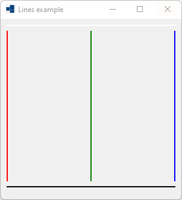
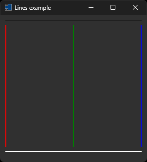
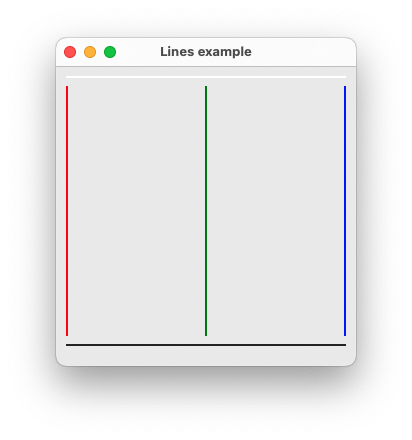
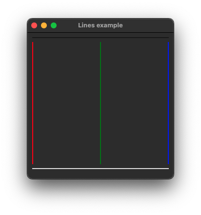
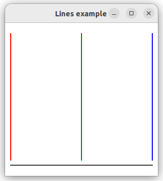
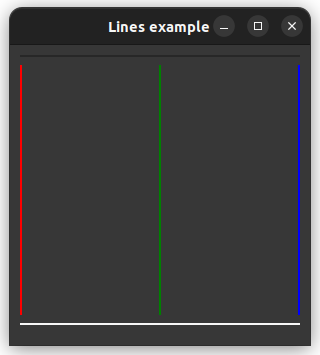

|
xtd
1.0.0
|
Loading...
Searching...
No Matches
line.cpp
demonstrates how to create a custom control with xtd::forms::user_control control.
- Windows


- macOS


- Gnome


#include <xtd/xtd>
namespace line_example {
class colored_line : public user_control {
public:
void color(const drawing::color& color) {back_color(color);}
drawing::color color() const {return back_color();}
};
class form1 : public form {
public:
form1() {
line_separator.color(drawing::system_colors::window());
line_separator.bounds({10, 10, 280, 2});
line_red.color(drawing::color::red);
line_red.bounds({10, 20, 2, 250});
line_green.color(drawing::color::green);
line_green.bounds({149, 20, 2, 250});
line_blue.color(drawing::color::blue);
line_blue.bounds({288, 20, 2, 250});
line_separator2.color(drawing::system_colors::control_text());
line_separator2.bounds({10, 278, 280, 2});
text("Lines example");
client_size({300, 300});
controls().add_range({line_separator, line_red, line_green, line_blue, line_separator2});
}
private:
colored_line line_separator;
colored_line line_red;
colored_line line_green;
colored_line line_blue;
colored_line line_separator2;
};
}
auto main() -> int {
application::run(line_example::form1 {});
}
auto color() const noexcept -> const xtd::drawing::color &override
Gets the color is used to add foreground effects to the text.
Generated on for xtd by Gammasoft. All rights reserved.